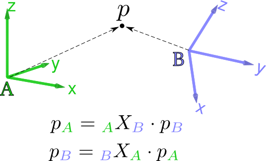

Spatial vectors
In RobCoGen, 6D coordinate vectors representing spatial-vectors (twists and wrenches) always follow this convention:
- the first three coordinates represent the angular part of the quantity (either angular velocity or torque)
- the last three coordinates represent the linear part (linear velocity or force)
As far as C++ is concerned, the
iit::rbd namespace
has some elements to abstract the underlying convention, like a 6-value enum to
index symbolically the vectors.
Reference frames
The coordinate frames of links and joints are not mentioned explicitly in robot-model files.
In RobCoGen, the ID (name) of a reference frame defaults to the name of the link or the joint it is attached to.
This policy is implemented in a dedicated module of the Robot Model Tools package.
Coordinate transformation matrices
Coordinate transforms, in the generated code but also in documentation, follow a naming convention in the form:
A_X_B
where A and B refer to some reference frame.
This notation immediately conveys the effect of the transform: when
right-multiplied by a column vector of coordinates of B,
it gives the coordinates of A, as in
v_A = A_X_B * v_B
For example, the transform that maps coordinates in the frame of a link
called wrist to coordinates of link trunk, will typically appear in the
source code with the identifier trunk_X_wrist.
Left and right frames
In the notation A_X_B, the frames A and
B are sometimes referred to as the left and
right frame, respectively, because of their relative position with
respect to X. The figure below illustrates the notation.

In the first equation A is the left frame while
B is the right frame. In the second equation it is the other way round.
Given a certain context, a pair right/left frame uniquely identifies the semantics of a coordinate transform.
Polarity
The two complementary transforms A_X_B and B_X_A
are said to have opposite polarity.